规定初始像素覆盖已通过独立数据验收，完整12步与物理安全未通过。Prescribed initial pixel coverage passes the independent DATA audit; full12-step and physical acceptance remain incomplete. Original1280×720; no edits/crop. Every image below is INITIAL, not micro1/final.
{"seed": 1, "proposal_id": 2825, "global_id": 17161, "family": 1}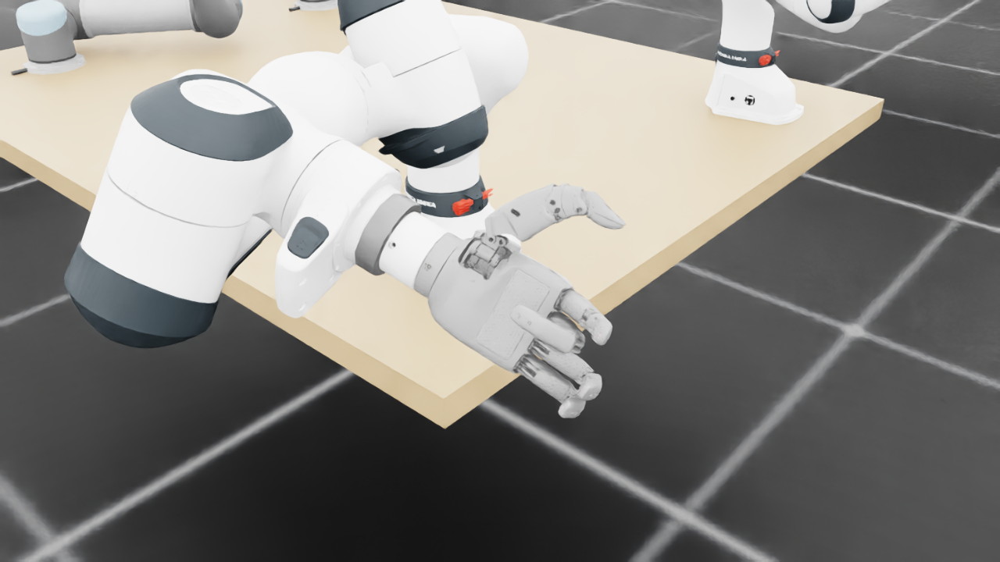
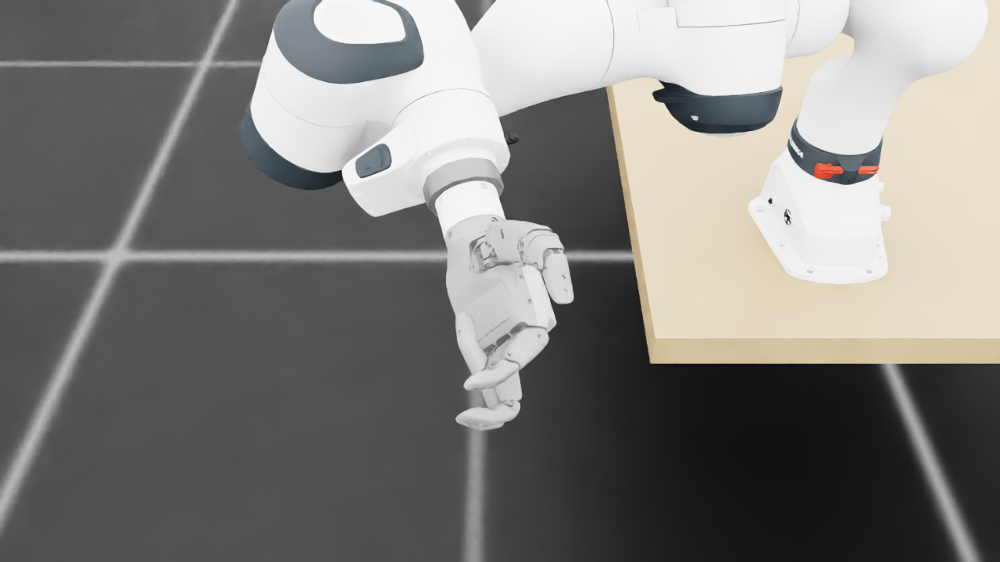
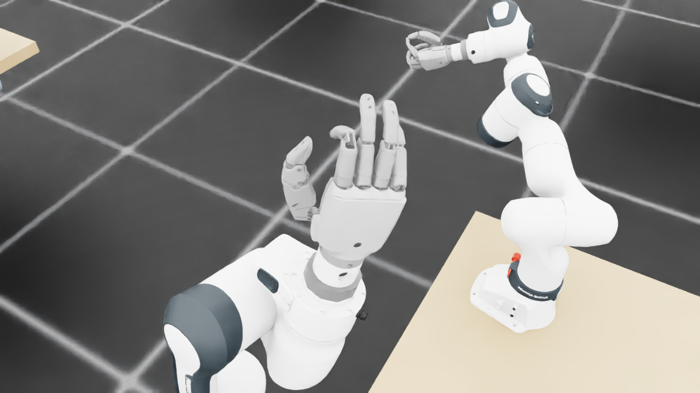
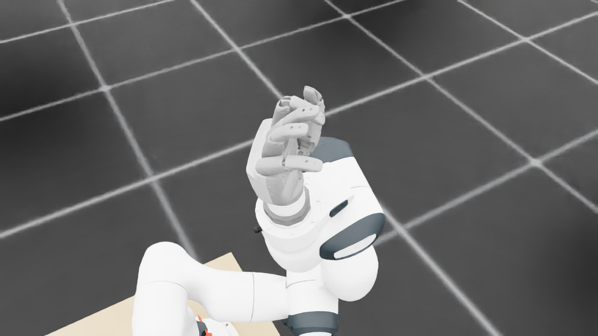
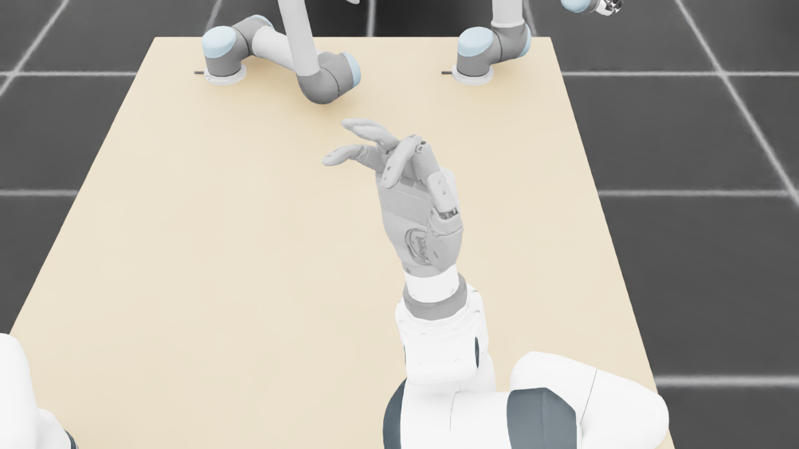
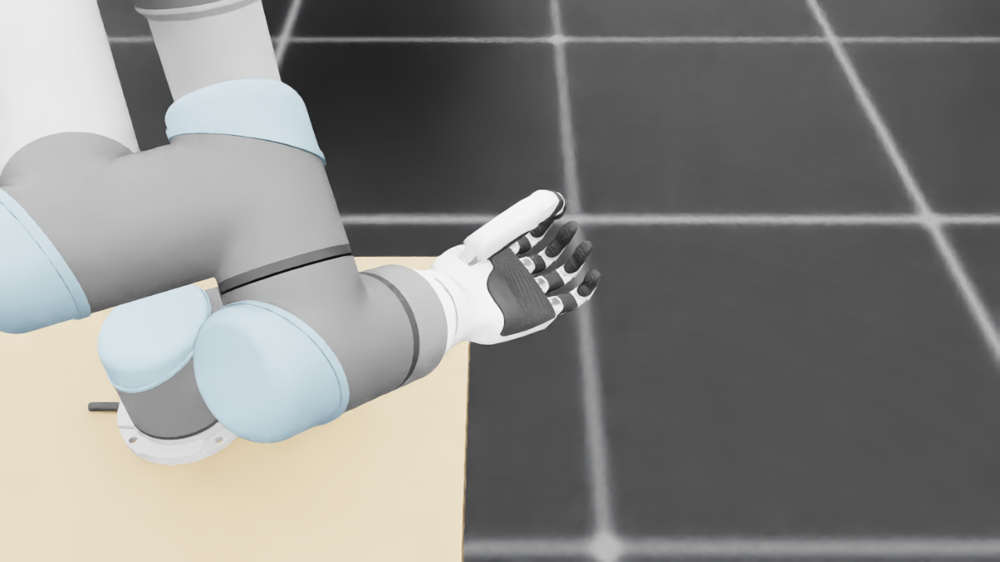
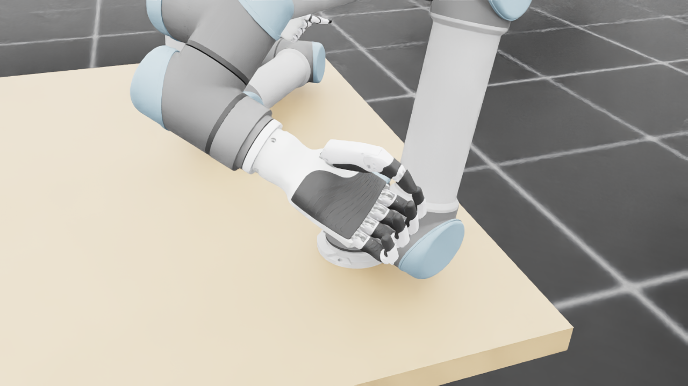
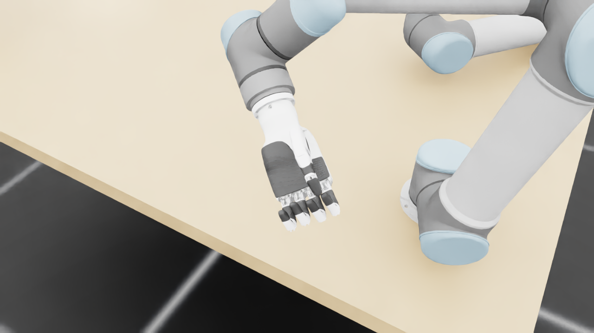
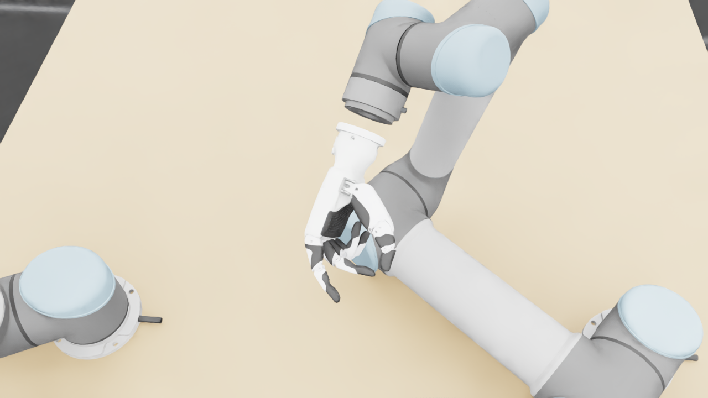
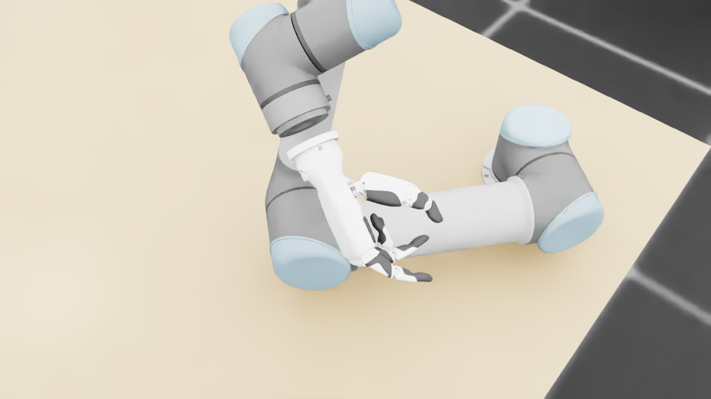
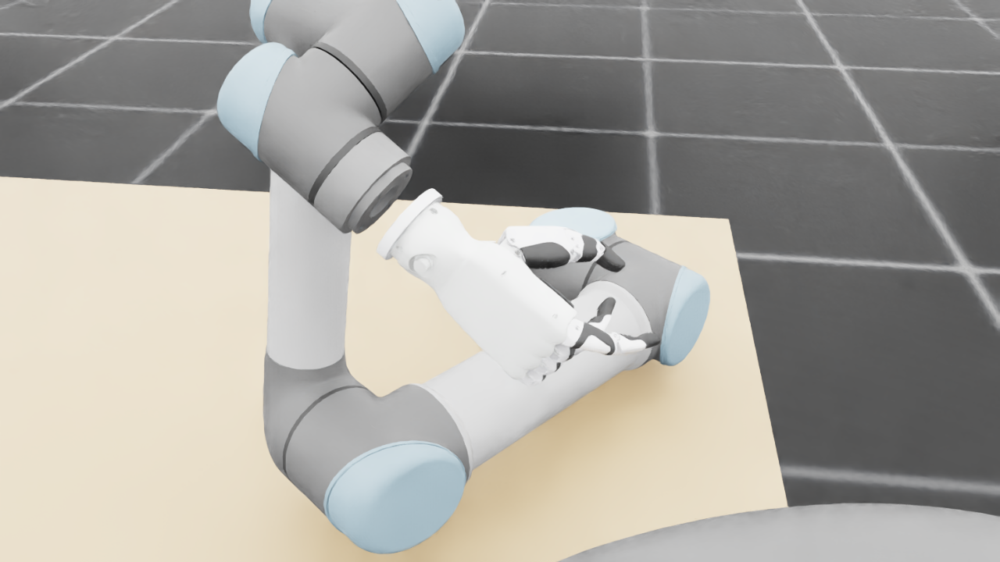
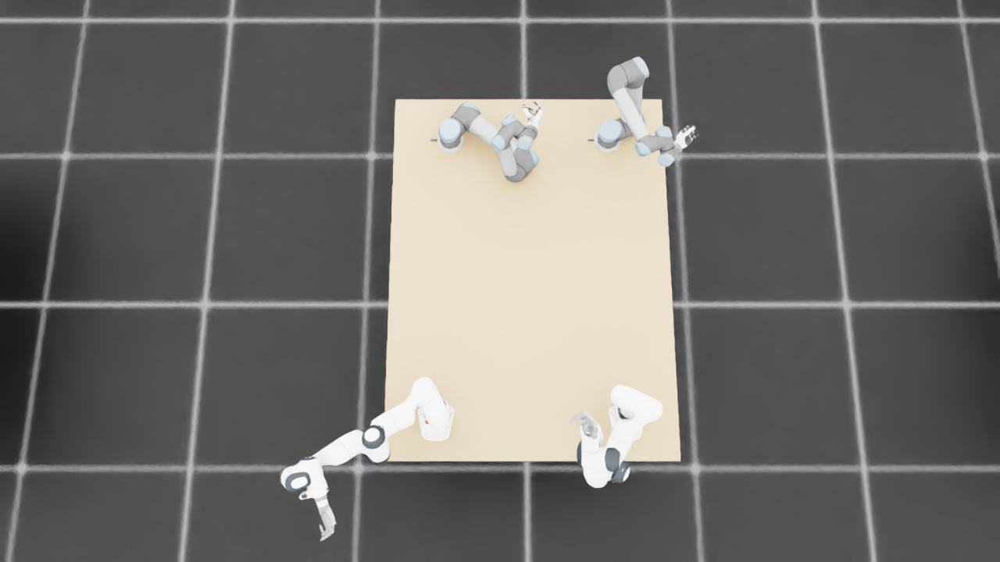
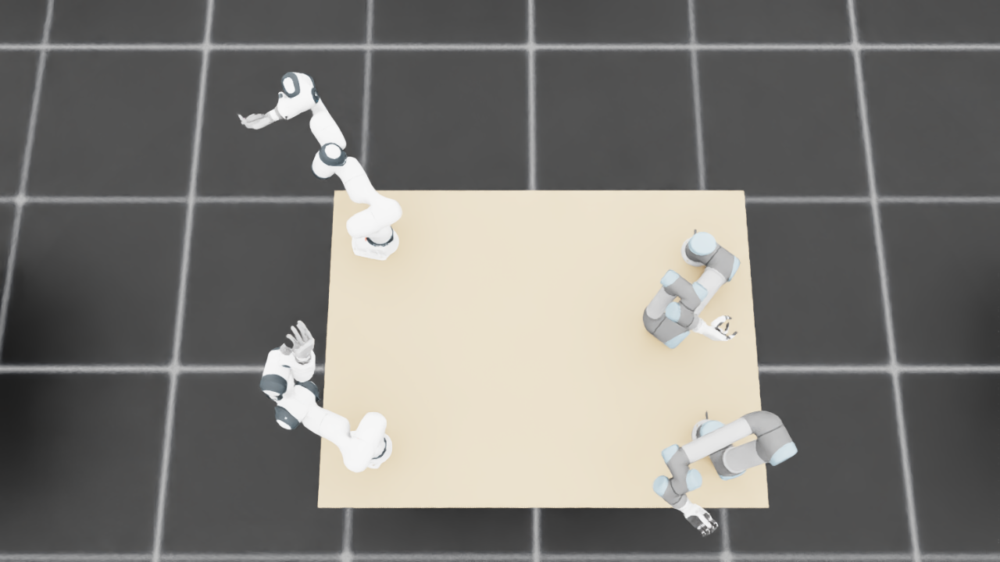
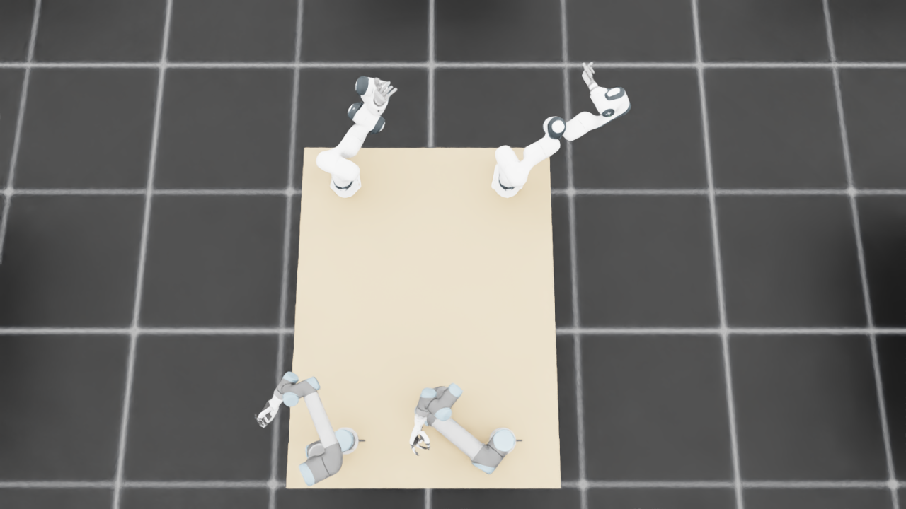
{
"qualified": true,
"arms": {
"F_L": {
"qualified": true,
"palm_visual_peak_pixels": 22643,
"finger_family_peak_pixels": {
"thumb": 11827,
"index": 3580,
"middle": 3226,
"ring": 2581,
"little": 2613
},
"per_native_body_peak_pixels": {
"/World/envs/env_11/F_L/f2_hand/left_hand_base": 29115,
"/World/envs/env_11/F_L/f2_hand/left_index_1": 2523,
"/World/envs/env_11/F_L/f2_hand/left_middle_1": 707,
"/World/envs/env_11/F_L/f2_hand/left_pinky_1": 1852,
"/World/envs/env_11/F_L/f2_hand/left_ring_1": 1525,
"/World/envs/env_11/F_L/f2_hand/left_thumb_1": 770,
"/World/envs/env_11/F_L/f2_hand/left_index_2": 1571,
"/World/envs/env_11/F_L/f2_hand/left_middle_2": 2519,
"/World/envs/env_11/F_L/f2_hand/left_pinky_2": 761,
"/World/envs/env_11/F_L/f2_hand/left_ring_2": 1575,
"/World/envs/env_11/F_L/f2_hand/left_thumb_2": 6477,
"/World/envs/env_11/F_L/f2_hand/left_thumb_3": 2789,
"/World/envs/env_11/F_L/f2_hand/left_thumb_4": 2235
},
"native_body_visibility_gaps": [],
"all_native_hand_bodies_observed": true,
"full_mesh_coverage_certified": false,
"all_recorded_attempt_peak": {
"qualified": false,
"palm_visual_peak_pixels": 30930,
"finger_family_peak_pixels": {
"thumb": 11827,
"index": 4524,
"middle": 5025,
"ring": 4135,
"little": 4877
},
"per_native_body_peak_pixels": {
"/World/envs/env_11/F_L/f2_hand/left_hand_base": 37256,
"/World/envs/env_11/F_L/f2_hand/left_index_1": 2993,
"/World/envs/env_11/F_L/f2_hand/left_middle_1": 2240,
"/World/envs/env_11/F_L/f2_hand/left_pinky_1": 3123,
"/World/envs/env_11/F_L/f2_hand/left_ring_1": 2630,
"/World/envs/env_11/F_L/f2_hand/left_thumb_1": 969,
"/World/envs/env_11/F_L/f2_hand/left_index_2": 2016,
"/World/envs/env_11/F_L/f2_hand/left_middle_2": 3079,
"/World/envs/env_11/F_L/f2_hand/left_pinky_2": 1754,
"/World/envs/env_11/F_L/f2_hand/left_ring_2": 1665,
"/World/envs/env_11/F_L/f2_hand/left_thumb_2": 6477,
"/World/envs/env_11/F_L/f2_hand/left_thumb_3": 2789,
"/World/envs/env_11/F_L/f2_hand/left_thumb_4": 2471
},
"native_body_visibility_gaps": [],
"all_native_hand_bodies_observed": true,
"full_mesh_coverage_certified": false,
"qualification": false
},
"attempts": 8,
"decoded": 8
},
"F_R": {
"qualified": true,
"palm_visual_peak_pixels": 19499,
"finger_family_peak_pixels": {
"thumb": 6983,
"index": 4527,
"middle": 5054,
"ring": 4894,
"little": 4889
},
"per_native_body_peak_pixels": {
"/World/envs/env_11/F_R/f2_hand/right_hand_base": 22500,
"/World/envs/env_11/F_R/f2_hand/right_index_1": 2750,
"/World/envs/env_11/F_R/f2_hand/right_middle_1": 2580,
"/World/envs/env_11/F_R/f2_hand/right_pinky_1": 2381,
"/World/envs/env_11/F_R/f2_hand/right_ring_1": 2585,
"/World/envs/env_11/F_R/f2_hand/right_thumb_1": 537,
"/World/envs/env_11/F_R/f2_hand/right_index_2": 2596,
"/World/envs/env_11/F_R/f2_hand/right_middle_2": 2474,
"/World/envs/env_11/F_R/f2_hand/right_pinky_2": 2508,
"/World/envs/env_11/F_R/f2_hand/right_ring_2": 2423,
"/World/envs/env_11/F_R/f2_hand/right_thumb_2": 3161,
"/World/envs/env_11/F_R/f2_hand/right_thumb_3": 1720,
"/World/envs/env_11/F_R/f2_hand/right_thumb_4": 2256
},
"native_body_visibility_gaps": [],
"all_native_hand_bodies_observed": true,
"full_mesh_coverage_certified": false,
"all_recorded_attempt_peak": {
"qualified": false,
"palm_visual_peak_pixels": 27711,
"finger_family_peak_pixels": {
"thumb": 8281,
"index": 4527,
"middle": 5054,
"ring": 4894,
"little": 4889
},
"per_native_body_peak_pixels": {
"/World/envs/env_11/F_R/f2_hand/right_hand_base": 33564,
"/World/envs/env_11/F_R/f2_hand/right_index_1": 2750,
"/World/envs/env_11/F_R/f2_hand/right_middle_1": 2580,
"/World/envs/env_11/F_R/f2_hand/right_pinky_1": 2381,
"/World/envs/env_11/F_R/f2_hand/right_ring_1": 2585,
"/World/envs/env_11/F_R/f2_hand/right_thumb_1": 703,
"/World/envs/env_11/F_R/f2_hand/right_index_2": 2596,
"/World/envs/env_11/F_R/f2_hand/right_middle_2": 2474,
"/World/envs/env_11/F_R/f2_hand/right_pinky_2": 2508,
"/World/envs/env_11/F_R/f2_hand/right_ring_2": 2423,
"/World/envs/env_11/F_R/f2_hand/right_thumb_2": 4596,
"/World/envs/env_11/F_R/f2_hand/right_thumb_3": 1720,
"/World/envs/env_11/F_R/f2_hand/right_thumb_4": 2256
},
"native_body_visibility_gaps": [],
"all_native_hand_bodies_observed": true,
"full_mesh_coverage_certified": false,
"qualification": false
},
"attempts": 9,
"decoded": 9
},
"U_L": {
"qualified": true,
"palm_visual_peak_pixels": 14167,
"finger_family_peak_pixels": {
"thumb": 8235,
"index": 2235,
"middle": 2289,
"ring": 2700,
"little": 2920
},
"per_native_body_peak_pixels": {
"/World/envs/env_11/U_L/wrist_3_link": 38527,
"/World/envs/env_11/U_L/left_index_1": 1216,
"/World/envs/env_11/U_L/left_little_1": 1717,
"/World/envs/env_11/U_L/left_middle_1": 1003,
"/World/envs/env_11/U_L/left_ring_1": 1321,
"/World/envs/env_11/U_L/left_thumb_1": 340,
"/World/envs/env_11/U_L/left_index_2": 1046,
"/World/envs/env_11/U_L/left_little_2": 1203,
"/World/envs/env_11/U_L/left_middle_2": 1286,
"/World/envs/env_11/U_L/left_ring_2": 1379,
"/World/envs/env_11/U_L/left_thumb_2": 4650,
"/World/envs/env_11/U_L/left_thumb_3": 2459,
"/World/envs/env_11/U_L/left_thumb_4": 1093
},
"native_body_visibility_gaps": [],
"all_native_hand_bodies_observed": true,
"full_mesh_coverage_certified": false,
"all_recorded_attempt_peak": {
"qualified": false,
"palm_visual_peak_pixels": 14167,
"finger_family_peak_pixels": {
"thumb": 10765,
"index": 2235,
"middle": 2289,
"ring": 2843,
"little": 4743
},
"per_native_body_peak_pixels": {
"/World/envs/env_11/U_L/wrist_3_link": 41667,
"/World/envs/env_11/U_L/left_index_1": 1216,
"/World/envs/env_11/U_L/left_little_1": 2892,
"/World/envs/env_11/U_L/left_middle_1": 1003,
"/World/envs/env_11/U_L/left_ring_1": 1358,
"/World/envs/env_11/U_L/left_thumb_1": 525,
"/World/envs/env_11/U_L/left_index_2": 1046,
"/World/envs/env_11/U_L/left_little_2": 1851,
"/World/envs/env_11/U_L/left_middle_2": 1286,
"/World/envs/env_11/U_L/left_ring_2": 1485,
"/World/envs/env_11/U_L/left_thumb_2": 6447,
"/World/envs/env_11/U_L/left_thumb_3": 2965,
"/World/envs/env_11/U_L/left_thumb_4": 1231
},
"native_body_visibility_gaps": [],
"all_native_hand_bodies_observed": true,
"full_mesh_coverage_certified": false,
"qualification": false
},
"attempts": 8,
"decoded": 8
},
"U_R": {
"qualified": true,
"palm_visual_peak_pixels": 2128,
"finger_family_peak_pixels": {
"thumb": 6851,
"index": 3210,
"middle": 2197,
"ring": 1572,
"little": 824
},
"per_native_body_peak_pixels": {
"/World/envs/env_11/U_R/wrist_3_link": 37858,
"/World/envs/env_11/U_R/right_index_1": 2089,
"/World/envs/env_11/U_R/right_little_1": 414,
"/World/envs/env_11/U_R/right_middle_1": 935,
"/World/envs/env_11/U_R/right_ring_1": 468,
"/World/envs/env_11/U_R/right_thumb_1": 443,
"/World/envs/env_11/U_R/right_index_2": 1251,
"/World/envs/env_11/U_R/right_little_2": 635,
"/World/envs/env_11/U_R/right_middle_2": 1262,
"/World/envs/env_11/U_R/right_ring_2": 1190,
"/World/envs/env_11/U_R/right_thumb_2": 4115,
"/World/envs/env_11/U_R/right_thumb_3": 1639,
"/World/envs/env_11/U_R/right_thumb_4": 839
},
"native_body_visibility_gaps": [],
"all_native_hand_bodies_observed": true,
"full_mesh_coverage_certified": false,
"all_recorded_attempt_peak": {
"qualified": true,
"palm_visual_peak_pixels": 2128,
"finger_family_peak_pixels": {
"thumb": 6851,
"index": 3210,
"middle": 2197,
"ring": 1572,
"little": 824
},
"per_native_body_peak_pixels": {
"/World/envs/env_11/U_R/wrist_3_link": 37858,
"/World/envs/env_11/U_R/right_index_1": 2089,
"/World/envs/env_11/U_R/right_little_1": 414,
"/World/envs/env_11/U_R/right_middle_1": 935,
"/World/envs/env_11/U_R/right_ring_1": 468,
"/World/envs/env_11/U_R/right_thumb_1": 443,
"/World/envs/env_11/U_R/right_index_2": 1251,
"/World/envs/env_11/U_R/right_little_2": 635,
"/World/envs/env_11/U_R/right_middle_2": 1262,
"/World/envs/env_11/U_R/right_ring_2": 1190,
"/World/envs/env_11/U_R/right_thumb_2": 4115,
"/World/envs/env_11/U_R/right_thumb_3": 1639,
"/World/envs/env_11/U_R/right_thumb_4": 839
},
"native_body_visibility_gaps": [],
"all_native_hand_bodies_observed": true,
"full_mesh_coverage_certified": false,
"qualification": false
},
"attempts": 3,
"decoded": 3
}
},
"wide": {
"qualified": true,
"per_native_object_peak_pixels": {
"/World/envs/env_11/F_L/fr3_link0": 1331,
"/World/envs/env_11/F_L/fr3_link1": 1538,
"/World/envs/env_11/F_L/fr3_link2": 2330,
"/World/envs/env_11/F_L/fr3_link3": 1898,
"/World/envs/env_11/F_L/fr3_link4": 1098,
"/World/envs/env_11/F_L/fr3_link5": 1224,
"/World/envs/env_11/F_L/fr3_link6": 1776,
"/World/envs/env_11/F_L/fr3_link7": 480,
"/World/envs/env_11/F_L/fr3_link8": 82,
"/World/envs/env_11/F_L/f2_hand/left_hand_base": 444,
"/World/envs/env_11/F_L/f2_hand/left_index_1": 37,
"/World/envs/env_11/F_L/f2_hand/left_middle_1": 20,
"/World/envs/env_11/F_L/f2_hand/left_pinky_1": 5,
"/World/envs/env_11/F_L/f2_hand/left_ring_1": 5,
"/World/envs/env_11/F_L/f2_hand/left_thumb_1": 5,
"/World/envs/env_11/F_L/f2_hand/left_index_2": 40,
"/World/envs/env_11/F_L/f2_hand/left_middle_2": 49,
"/World/envs/env_11/F_L/f2_hand/left_pinky_2": 10,
"/World/envs/env_11/F_L/f2_hand/left_ring_2": 17,
"/World/envs/env_11/F_L/f2_hand/left_thumb_2": 93,
"/World/envs/env_11/F_L/f2_hand/left_thumb_3": 43,
"/World/envs/env_11/F_L/f2_hand/left_thumb_4": 42,
"/World/envs/env_11/F_R/fr3_link0": 674,
"/World/envs/env_11/F_R/fr3_link1": 1440,
"/World/envs/env_11/F_R/fr3_link2": 2717,
"/World/envs/env_11/F_R/fr3_link3": 1578,
"/World/envs/env_11/F_R/fr3_link4": 1381,
"/World/envs/env_11/F_R/fr3_link5": 1634,
"/World/envs/env_11/F_R/fr3_link6": 551,
"/World/envs/env_11/F_R/fr3_link7": 709,
"/World/envs/env_11/F_R/fr3_link8": 103,
"/World/envs/env_11/F_R/f2_hand/right_hand_base": 486,
"/World/envs/env_11/F_R/f2_hand/right_index_1": 68,
"/World/envs/env_11/F_R/f2_hand/right_middle_1": 74,
"/World/envs/env_11/F_R/f2_hand/right_pinky_1": 75,
"/World/envs/env_11/F_R/f2_hand/right_ring_1": 67,
"/World/envs/env_11/F_R/f2_hand/right_thumb_1": 9,
"/World/envs/env_11/F_R/f2_hand/right_index_2": 63,
"/World/envs/env_11/F_R/f2_hand/right_middle_2": 86,
"/World/envs/env_11/F_R/f2_hand/right_pinky_2": 58,
"/World/envs/env_11/F_R/f2_hand/right_ring_2": 85,
"/World/envs/env_11/F_R/f2_hand/right_thumb_2": 68,
"/World/envs/env_11/F_R/f2_hand/right_thumb_3": 38,
"/World/envs/env_11/F_R/f2_hand/right_thumb_4": 53,
"/World/envs/env_11/U_L/base_link": 287,
"/World/envs/env_11/U_L/shoulder_link": 1015,
"/World/envs/env_11/U_L/upper_arm_link": 4019,
"/World/envs/env_11/U_L/forearm_link": 4248,
"/World/envs/env_11/U_L/wrist_1_link": 1022,
"/World/envs/env_11/U_L/wrist_2_link": 777,
"/World/envs/env_11/U_L/wrist_3_link": 868,
"/World/envs/env_11/U_L/left_index_1": 43,
"/World/envs/env_11/U_L/left_little_1": 42,
"/World/envs/env_11/U_L/left_middle_1": 37,
"/World/envs/env_11/U_L/left_ring_1": 42,
"/World/envs/env_11/U_L/left_thumb_1": 12,
"/World/envs/env_11/U_L/left_index_2": 30,
"/World/envs/env_11/U_L/left_little_2": 21,
"/World/envs/env_11/U_L/left_middle_2": 16,
"/World/envs/env_11/U_L/left_ring_2": 30,
"/World/envs/env_11/U_L/left_thumb_2": 141,
"/World/envs/env_11/U_L/left_thumb_3": 43,
"/World/envs/env_11/U_L/left_thumb_4": 13,
"/World/envs/env_11/U_R/base_link": 287,
"/World/envs/env_11/U_R/shoulder_link": 1271,
"/World/envs/env_11/U_R/upper_arm_link": 3196,
"/World/envs/env_11/U_R/forearm_link": 2061,
"/World/envs/env_11/U_R/wrist_1_link": 859,
"/World/envs/env_11/U_R/wrist_2_link": 840,
"/World/envs/env_11/U_R/wrist_3_link": 715,
"/World/envs/env_11/U_R/right_index_1": 46,
"/World/envs/env_11/U_R/right_little_1": 16,
"/World/envs/env_11/U_R/right_middle_1": 29,
"/World/envs/env_11/U_R/right_ring_1": 24,
"/World/envs/env_11/U_R/right_thumb_1": 19,
"/World/envs/env_11/U_R/right_index_2": 41,
"/World/envs/env_11/U_R/right_little_2": 7,
"/World/envs/env_11/U_R/right_middle_2": 50,
"/World/envs/env_11/U_R/right_ring_2": 35,
"/World/envs/env_11/U_R/right_thumb_2": 140,
"/World/envs/env_11/U_R/right_thumb_3": 45,
"/World/envs/env_11/U_R/right_thumb_4": 20,
"/World/envs/env_11/TableF": 102701,
"/World/envs/env_11/TableU": 93499
},
"arm_peak_pixels": {
"F_L": 12180,
"F_R": 11908,
"U_L": 12023,
"U_R": 9642
},
"table_peak_pixels": {
"TableF": 102701,
"TableU": 93499
},
"critical_body_peak_pixels": {
"/World/envs/env_11/U_L/forearm_link": 4248,
"/World/envs/env_11/U_L/wrist_2_link": 777,
"/World/envs/env_11/U_R/forearm_link": 2061,
"/World/envs/env_11/U_R/wrist_2_link": 840
}
},
"raw_attempt_count": 41,
"PNG_count": 41,
"angle_records": 41,
"max_actual_angle_identity_error_deg": 0.0,
"held_snapshot_checks": 1280,
"universal_visibility_impossible": false,
"full_mesh_coverage_certified": false
}